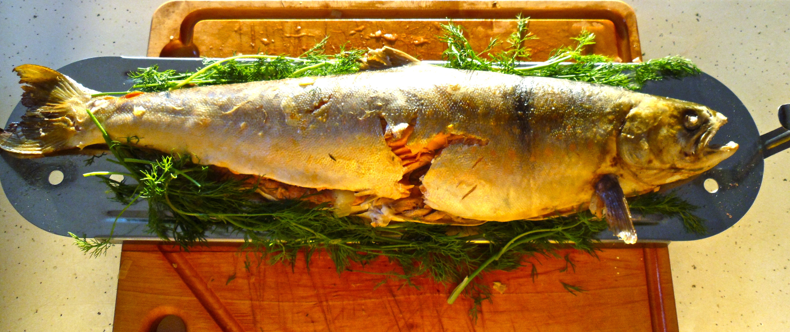

Northwest Territories Food and Drink
Most alcohol is imported and supplies vary from town to town. Hotels and restaurants in main towns normally
have a good selection, including Canadian whiskies.
Specialities:
- Arctic char, grayling, musk ox and caribou.

Musk Ox with Red Cabbage
4 x 250g musk ox loin
Olive oil
800g boiled new potatoes
8 whole garlic clove
150 – 250g olives
A few sprigs of thyme
250g peeled & sliced flat mushrooms
For the Braised Red Cabbage:
1 Red Cabbage
2 Bay Leaves
½ Cinnamon Stick
½ cup Brown Sugar
½ cup Redcurrant Jelly
1 cup Orange Juice
1 cup Red Wine
½ cup Orange Marmalade
Pinch ground Mixed Spice
3 Star Anise
Salt and Pepper
Shred the cabbage and put into a large pan. Add all other ingredients and cover with tin foil. Cook in the oven for 2-3 hours,
gas mark 4 or equivalent.
For the parsnip crisps:
1 parsnip peeled topped & bottomed. Slice thinly on a mandolin and deep fry until golden brown. Dry on a paper towel then serve.
In a hot pan pour some olive oil, add the chopped new potatoes, garlic and olives, toss occasionally and add the thyme and pinch of
sea salt and black pepper. Toss and serve.
Rub some olive oil on the steaks and season and on a hot griddle pan cook to your preferred taste. When you turn your steak add the
sliced mushrooms and cook.
Arctic Char
Sauce
3 Tbl. soy sauce
3 Tbl. honey
2 Tbl. dry sherry
2 tsp. peeled, finely chopped gingerroot
2 tsp. olive oil
Fish
Vegetable oil or vegetable oil spray for brushing the grill grate
4 boneless arctic char fillets, skin on (about 6 oz. each)
In a small bowl, combine all the sauce ingredients.
Start the grill.
Then the grill is hot, remove the grill grate, spray or brush it with the vegetable oil, then replace the grate on the grill.
Place the Arctic Char on a platter, and pour enough sauce over the fish to coat the fish thoroughly, reserving the rest of the
sauce for basting.
Place the fish, flesh side down, on the grill, and grill the fish for 3 to 4 minutes, basting it several times with the reserved sauce.
Turn the fillets, and continue grilling them, while basting frequently, for 3 to 4 minutes, or until they are just done.